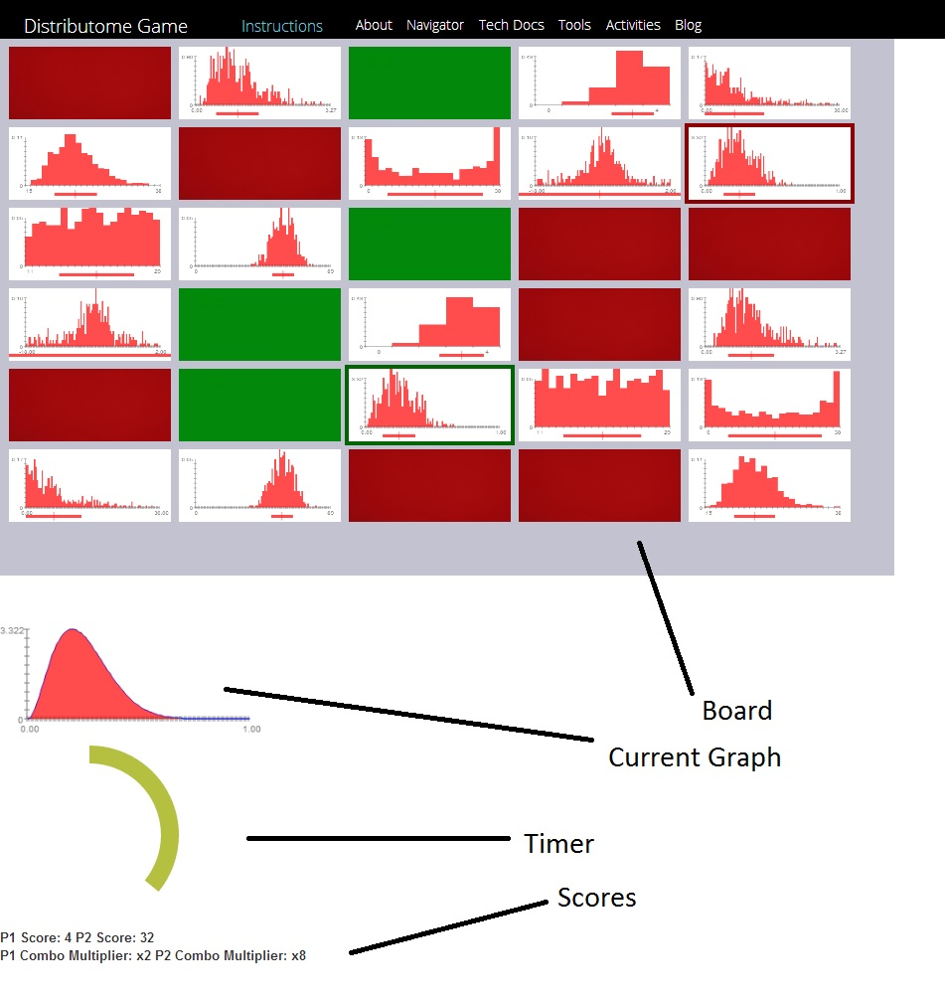

The objective of this game is to score the most amount of points by matching the given density curve with its corresponding histograms.
This game requires 1 player, and is played against the enemy AI
A typical gameboard is shown below:
Board:Shows all of the possible histograms that can be
matched to the density curve
Current Graph:Shows the current graph whose matches need to be
found
Timer: Shows the amount of time remaining for the current round
Score: Shows scores as well as multipliers for both players
The first round begins when the current graph is revealed. At this point, it is the job of both players to find the correct histograms within the time limit. Once the time limit is reached, the corresponding histograms are flipped face down, and the next round begins with a different graph.
Players recieve 1 point per each correct histograms(there are two correct histograms per graph), and lose one point for each incorrect histogram. No points are awarded or deducted if nothing is selected.
At the end of the round, before the points earned are added to the total score, they are first multiplied by the score multiplier. Initially, the score multiplier is set to 1x. The multiplier is doubled by choosing both of the corresponding histograms in a round. Choosing an incorrect histogram resets the multiplier back to 1x.
The game ends when all graphs have been shown
The following options can be configured before pressing the start
button:
Number of Graphs: Determines the number of graphs, as well as
the number of rounds to be presented
Sample Size: Determines the sample size of the histograms
Game Type: Determines the pool that the graphs will be drawn
from.
Game speed: Determines the length of each round
Enemy Difficulty: Determines the difficulty level of the Enemy AI